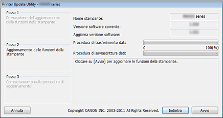

Ambiente operativo per l'utility di aggiornamento stampante
-
Sistemi operativi interessati
-
Windows
-
- Windows 8, Windows 7, Windows Vista, Windows XP
-
Mac OS
-
- Mac OS X v10.8, Mac OS X v10.7, Mac OS X v10.6, Mac OS X v10.5.8
-
-
Requisiti
-
- Il computer sul quale è installato il driver della stampante.
-
In ambiente Windows, aprire la finestra Proprietà del driver della stampante, visualizzare la scheda Porta, quindi selezionare Attiva supporto bidirezionale. Per le istruzioni relative all'apertura della finestra Proprietà, consultare il manuale in linea fornito in dotazione con la stampante.
-
- La stampante in uso
-
- Cavo USB
-
- Utility di aggiornamento stampante
 Importante
Importante
-
Controllare se è necessario eseguire l'aggiornamento
È possibile verificare se sia necessario un aggiornamento stampando il motivo di controllo degli ugelli.
Controllare la versione del software (firmware) "V. X.XXX" riportata nella stampa del motivo di controllo degli ugelli. Se la versione del firmware è precedente alla V. 2.000, è necessario eseguire l'aggiornamento del firmware.
Eseguire l'aggiornamento in base alla "Procedura di aggiornamento della versione del firmware" riportata di seguito.
 Nota
Nota
-
Per le istruzioni relative alla stampa del motivo di controllo degli ugelli, consultare il manuale in linea fornito in dotazione con la stampante.
Procedura di aggiornamento della versione del firmware
-
Collegare il computer alla stampante utilizzando un cavo USB.
Se alla stampante è collegato un cavo LAN o un cavo USB per fotocamera, scollegare tali cavi.
Per i modelli dotati di slot per schede di memoria, rimuovere le eventuali schede inserite negli slot.
Nota
-
Assicurarsi che al computer sia collegata tramite cavo USB un'unica stampante.
Importante
-
In ambiente Mac OS, assicurarsi che il computer sia configurato in modo tale da non entrare in modalità di sospensione.
-
-
In ambiente Windows, fare doppio clic su (Printer Update.exe) per avviare l'Utility di aggiornamento.
In ambiente Mac OS, fare doppio clic su (Aggiornamento stampante) per avviare l'Utility di aggiornamento.
-
Controllare quanto indicato al Passo 1 visualizzato nell'Utility di aggiornamento stampante, accendere la stampante, quindi fare clic su Avanti.
Nota
-
Se viene visualizzato un messaggio di errore, di seguito sono indicate le possibili cause.
-
Causa (1): il cavo USB non è collegato.
Soluzione: collegare il cavo USB, quindi ripartire dal passo 1. -
Causa (2): Il file di aggiornamento è destinato a una stampante differente.
Soluzione: scaricare il file per la stampante da aggiornare, quindi ripartire dal passo 1.
-
-
-
Controllare quanto indicato al Passo 2 visualizzato nell'Utility di aggiornamento stampante, accendere la stampante, quindi fare clic su Avvio.
*A seconda del sistema operativo utilizzato, le finestre operative visualizzate potrebbero variare.
Nome stampante: nome della stampante collegata al computer.
Versione software corrente: versione del software della stampante collegata.
Aggiorna versione software: versione del software al quale sta per essere aggiornata la stampante.
Importante
-
Non spegnere la stampante né scollegare il cavo USB fino al completamento dell'aggiornamento. Ciò potrebbe causare un errore.
-
-
Se non è possibile fare clic su Avvio, l'aggiornamento è stato eseguito per una stampante che non richiedeva la sovrascrittura del firmware. Controllare nuovamente la Versione software corrente. Se non è necessario eseguire l'aggiornamento, annullare l'operazione.
-
Durante l'aggiornamento la spia di errore della stampante lampeggia in arancione.
-
Quando nell'utility di aggiornamento stampante (Printer Update Utility) viene visualizzata la finestra del Passo 3, controllare quanto indicato nel messaggio, quindi fare clic su Esci.
A questo punto, l'aggiornamento del firmware è completo.
Quando l'aggiornamento è completato, la stampante si spegne automaticamente. Per utilizzare la stampante, scollegare innanzitutto il cavo di alimentazione, ricollegarlo e quindi accendere la stampante.
Se la stampante viene utilizzata con una connessione LAN, scollegare prima il cavo USB e poi collegare il cavo LAN.
Importante
-
Se si intende utilizzare la stampante con un collegamento in rete LAN, reimpostare normalmente la stampante sulla connessione LAN.
Per reimpostare la connessione LAN in ambiente Windows, è necessario selezionare "Stampante Canon XXX" come nome della porta " CNBJNPxxxxxxxxxx".
Per le istruzioni relative all'impostazione, consultare il manuale in linea fornito in dotazione con la stampante.
Nota
-
Se l'alimentazione viene spenta durante l'aggiornamento, questo non verrà completato normalmente.
Se la stampante non dovesse funzionare normalmente anche dopo averla spenta e riaccesa, è possibile che l'aggiornamento non sia andato a buon fine.
-
Nota
Cause degli errori e relative soluzioni
In caso di errore durante l'esecuzione dell'Utility di aggiornamento stampante, viene visualizzato un messaggio di errore.
In questo caso, eseguire le operazioni indicate nelle istruzioni riportate nel messaggio.
Nella tabella che segue sono elencate le cause dei principali messaggi di errore visualizzati, con le relative soluzioni.
|
Messaggio |
Causa |
Soluzione |
|---|---|---|
In ambiente Windows o Mac OS |
||
|
Questo programma non supporta il sistema operativo in uso. |
L'Utility di aggiornamento stampante è stata eseguita in un sistema operativo non supportato. |
Eseguire l'Utility di aggiornamento stampante in un sistema operativo supportato. |
|
È collegata più di una stampante. Controllare che sia collegata solo una stampante con un cavo USB, quindi riavviare l'utility. |
Al computer sono collegate due o più stampanti da aggiornare. |
Collegare un'unica stampante. |
|
Lo stato della stampante è incorretto. Accendere di nuovo la stampante, quindi riavviare l'utility. |
La stampante non è stata in grado di eseguire l'aggiornamento. |
Accendere di nuovo la stampante. |
|
Si è verificato un errore durante l'aggiornamento delle funzioni della stampante. Siccome l'aggiornamento non è riuscito, la stampante non può essere utilizzata nelle sue attuali condizioni. Accendere di nuovo la stampante e assicurarsi di riavviare l'utility. |
L'alimentazione della stampante è stata interrotta o il cavo USB è stato scollegato durante l'esecuzione dell'aggiornamento. |
Premere il pulsante OK per chiudere l'Utility di aggiornamento stampante. Spegnere la stampante, attendere alcuni istanti, quindi riaccenderla. Se la stampante non viene avviata normalmente o se non è possibile eseguire l'aggiornamento, è necessario riparare la stampante. |
In ambiente Windows |
||
|
Impossibile trovare la stampante. Controllare i seguenti elementi, quindi riavviare l'utility:
|
|
|
|
In ambiente Mac OS |
||
|
Mac OS X Classic è in esecuzione. |
Si è tentato di eseguire l'Utility di aggiornamento stampante mentre Classic era in esecuzione su Mac OS X. |
Interrompere Classic, quindi eseguire l'Utility di aggiornamento stampante da Mac OS X. |
|
Impossibile trovare la stampante. Controllare i seguenti elementi, quindi riavviare l'utility:
|
|
|